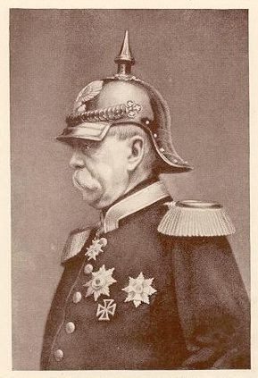

Otto von Bismarck and His Path to Unification

During the 19th Century, Europe underwent many dynamic changes such as many wars, governmental upheavals and cultural refinements; therefore, no one thing could stand alone as the main event of the European 19th Century. However, if one were to take the largest geographic area in central Europe contained by a single empire, one would find Prussia and Austria. Therefore, the unification of Germany could reasonably be considered the most dynamic change in central Europe during the 19th century, with the possible exception of the 1848 revolutionsy. With little doubt, Otto von Bismarck was the most influential leader of Prussia during this time frame. His authoritative leadership aidedleadership aided in the creation of a unifiedunification of Germany. Bismarck’s legacy was to see the German people united and he was very careful and patient in planning the road map to this unification. In part, Bismarck succeeded in this with two major phases now known as the Austro-Prussian War and the Franco-Prussian War.
Bismarck – A brief history.
Otto von Bismarck inherited both aristocratic and common legacies at birth. On his father’s side, he belonged to a noble family that owned estates in the Altmark of Germany. His mother’s only claim to fame, however, was that her father had been a cabinet secretary for Fredrick the Great. When Otto Bismarck was very young, his family leased out their estates and moved to Berlin where BismarckOtto was enrolled in a boarding school. He eventually moved through the echelons to the uUniversities in Berlin and Göttingen. As a result of his formal education, Bismarck hadHis acquired a great interest within him ofin history and literature, which he studied and read intensely.
At the end of his time in school, Bismarck passed the state examination and was rejected from the Prussian Foreign Service, but was accepted into the judiciary. “The judiciary in the common-law conception is one of the high organs of the state, co-ordinate with the legislature and the executive.” After being accepted iInto the judiciary (Add more info on this) he attempted twice to begin a civil service career but failed. These failures shaped his future distaste for bureaucrats. With his hopes for a career in civil service crushed, Otto Bismarck returned to south Germany where he managed the family estates for the majority of the next ten years.
During the ten-year stretch when he was managing his estates, Bismarck Otto built up his interest in political thought and theory and questioned how the Prussian government might better be arranged. BismarckOtto concluded that it was a pity that Prussia lacked a Parliament both because he felt it to be a necessary part of a government where opposing forces could be voiced on issues, and because he felt that in a parliament he could have an opportunity to make a name for himself.
Bismarck’s opportunity to act on his ambitions came in 1847 when a United Diet was summoned by King Friedrich Wilhelm IV to debate a new tax. Having answered to the summons, Bismarck played his cards right as an avid supporter of the King. Among the few people who shared the king’s conservative views, Bismarck was certainly the best versed, which brought to him the attention of the King and other major players in national politics.
From 1848 to 1859, there were a series of German revolts during which Bismarck defended the King’s policies and desires during parliamentary debates and remained one of the few capable speakers on the King’s side. The German people were becoming contemptuous of their leaders and pressure was rising for a change in government. The radical liberals were threatening a force of this change through revolution which Bismarck understood as a real threat to which he must heed. To avoid revolution, Bismarck lobbied for a parliament in which policy could be made, and lesser people could have a voice in national politics. “This frightened traditional aristocrats, and was the impetus for a modernizing movement, which Bismarck embraced, of establishing parliaments which allowed for at least the sense of ‘participatory democracy’ by the masses, and served as a safety valve to diffuse revolutionary forces. Bismarck was pacifying the masses.” Although the eventual outcome would indeed be a reorganization of political structure, the effectiveness of such a parliament would be nullified by the provisions under which it must operate. By granting the liberals a few of their requests (such as a parliament), Bismarck minimized the revolution’s effect by creating a government with a parliament, but one which was so restricted that it was as if it did not exist at all. Even had the parliament not been so weak, the effect would have been nearly the same because the limited membership would have allowed betterment of only the upper classes. “So Germany obtained neither unity nor constitutional government. The only tangible result of the revolution was the constitution issued by the King of Prussia in 1850. This remarkable document left the executive power in the hands of the King; it established a parliament of two houses, the lower to be elected by manhood suffrage—but it reduced that suffrage to a joke by dividing the voters into three classes, according to the amount of taxes paid”. As a result, “Bismarck was duly rewarded for the role he had played as one of the leading younger men of the conservative faction in the stormy years from 1848 to 1850. In 1851 he was appointed Prussian envoy to the diet of the German Confederation in Frankfurt. It was a key post in the making of Prussian policy, especially in relation to the future shape of Germany.” Bismarck uses this position to springboard his plans for German unification.
The Prussian envoy to the Diet of the German Confederation which was the highest position within the Prussian Foreign Service, and Bismarck was able to accomplish mighty things with the power he inherited from this title. During his time with the Foreign Service, Bismarck filled several ambassador positions, to Berlin, St. Petersburg, and Paris. In 1862 he became the Prussian minister-president. In this position, Bismarck was vested with the power to where he rarun the country in the name of the king, and began to earn the title, “The Iron Fisted Chancellor,” as he ran the country like a dictator in insubordination? of parliament, often times over-riding the King’s interests. and iIt is from this position that he was able to oversee the unification of Germany. 1
Austro Prussian War (Intro)
Prior to the Austro-Prussian War in 1866, most of Central Europe was ruled under by the German Confederation, which included many states, the largest of which being Austria and Prussia. The cause of the war had its beginnings in a dispute over a section of land annexed from the Danes called the Schleswig-Holstein. This land was to be jointly ruled by Austria and Prussia according to the Gastein Treaty of 1865,. However but, Bismarck, saw this as an opportunity wanting to create a reason to exclude Austria from having future influence over German relations, usedand he used this situation to spark war between the two states by accusing Austria of violating the treaty.
Causes
The Gastein Treaty was an unstable document which would not be able to stand the test of time; “it was only a temporary expedient to put off the conflict which henceforward was inevitable-inevitable, that is, if the Emperor of Austria still refused to sell Holstein to Prussia”.2 With this situation, Bismarck had the stage set to act out phaseact one of his plans to unify the German people. This first phase was to remove Austria from all German affairs. Bismarck understood that he needed the popular support of the general public, and to invade Austria would diminish his popularity. The ideal situation would be that for Austria Austria to invade Prussia, and the Schleswig-Holstein situation was the perfect platform to use to manipulate the Austrian government into this trap.
In preparation for this war, Bismarck only feared France’s influence. France was one of the leading super powers in Europe. If France sided with Austria over this issue then Prussia would be squeezed out between the countries. To assure that France would stay neutral, Bismarck made several trips to France to win the approval of the French leader, Napoleon III. “He saw Napoleon again in his return through Paris; the two succeeded in coming to an understanding. Napoleon assured him that he might depend on the absolute neutrality on France, in case of war withbetween Prussia and Austria” 2(241). Having his assurances from France and the strings of war ready to be pulled, Bismarckhe turned up the heat by sending anonymous dispatches to Austrian media that hinted at a possible Austrian invasion in violation of the Gastein Treaty in order to provoke a building of the Austrian militia which would in turn be seen as an act of preparation for war. The rumors that these dispatches caused sparked nervous behavior among the Austrian princes who reacted by mobilizing army troops to the Prussian-Austrian border merely as a defense mechanism. In Prussia, this move was seen by the public (as distorted by the media) as an act to serve as the pretext of war. Having achieved exactly the result he wanted, Bismarckhe knew it was just a matter of time before the tension would snap and Austria would strike. In the meantime, many tried to preserve keep the peace; “? except himself, there was in fact scarcely a single man who desired the war; the King still seized every opportunity of preserving the peace.” 2(2491)
At last, after a long wait, Austria made the final provocation, as Bismarck knew they would. “[Austria] proposed to summon the Estates of Holstein, and at the same time brought the question of the Duchies before the Diet. Bismarck declared that this was a breach of the treaty of Gastein, and that the agreement was therefore void. ; Prussian troops were ordered to enter Holstein.” 2(258)”.1 With this declaration the Austro-Prussian War began, and seven weeks later would end with Austria left in shambles and cast out of the German Confederation.
War only lasted seven weeks in which the Prussian army trampled all opposition they encountered. Bismarck’s was very particular in the way in which the war was conducted and was cautious not to ‘over do it.’. “Bismarck had no intention of weakening Austria, a potential ally, more than necessary.”
Other than pure victory, tThis war signified the ended of Austrian influence domination over German affairs and rallied German-wide patriotism for the German cause. With his public support higher than ever, Bismarck took supreme control over anything to do with the German people and prepared to organize the final stages from which to implement his goal of a united German nation-state.Now, having rallied the German people, Prussia, under Bismarck, could unify the German people under the rule of one country: Germany.
Prussia was enlarged substantially in several places after conquering the Schleswig-Holstein by obtaining ports on both the North and Baltic Seas. Additionally, the states of Hanover, Hesse-Cassel, Nassou, and Frankfurt joined as Prussian States, greatly enlarging the North West frontier. This together made Prussia equal to 2/3 of the land thatwhich contained German population.
“Replacing the old system of government as it had been run under the German Confederation was Bismarck’s chief concern:
“On July 1, 1867, the North German Confederation came legally into being. It consisted of: Prussia, Saxony, the grand duchies of Mecklenburg-Schwerin, Mecklenburg-Strelitz, Oldenburg, and Saxe-Weimar, the duchies of Brunswick, Anhalt, Saxe-Coburg-Gotha, the free cities of Hamburg, Bremen, and Lübeck, with smaller duchies and principalities— twenty-two in all. The princes retained certain sovereign rights: they might still summon local Estates, levy local taxes, and be separately represented at foreign courts; but the whole conduct of foreign affairs, the raising and control of the army, the decision of peace and war were to rest with the president.
The executive was vested in the King of Prussia as hereditary president, assisted by a federal chancellor. The Legislature was to consist of (i) a Bundesrat, or federal council, composed of plenipotentiaries from the confederate states, and (ii) a Reichstag, elected by universal manhood suffrage. Military service was to be compulsory throughout the Confederation. The first official act of the president was the appointment of Bismarck as chancellor of the Confederation.”
In drafting the constitution for the new confederation, Bismarck’s main concern was that of political control and who would have it. His constitution did three main things: first, it conserved the Prussian aristocratic-monarchical system; second, it united the idea of German nationalism and particularism while solving the problem of uniting sates of unequal size; and thirdly, it attracted Germans of the southern states as well as their individual federal governments. The North German Confederation consisted of Prussia, plus 21 smaller states. A Bundesrat (national Parliament) was established with 43 delegates from the 22 states, which was elected by universal male suffrage. The King of Prussia would serve as the president of the confederation. “Within a year, the constitution of the North German Confederation came into effect, laying the groundwork for the final unification of Germany four years later.” With this, Bismarck had unified all the German states (minus Austria), and created the appearance of a federation of independent and equal states.
The liberals felt that they had accomplished their goal of obtaining a more democratic government, but what really existed now, although seemingly democratic, was in fact a dysfunctional government in which the noble elite still exercised all the power It was the general structure which was liberal in this new government, “The federal government consisted of an executive, in the persons of the Emperor and his Chancellor and their staffs, a Federal Council (Bundesrat), composed of delegations from the separate states, and a National Parliament (Reichstag), which was elected by universal manhood suffrage and secret ballot.”
The Bundesrat, similar to the House of Lords in the United Kingdom, was a democratic legislative body in that no law could be passed by the king or anyone else without its approval. However, the King of Prussia appointed 17 of the 43 members of the Bundesrat without having to seek approval from anyone; thus, of course, the king could accomplish anything he desired. The King was also in total and indisputable control of the armies as well as the only decision maker in foreign policy. Instead of establishing an independent federal government modeled upon that of the United States, Bismarck improvised, combining a national lower house elected by universal suffrage with a second chamber not unlike that of the United States Congress and with the Prussian king as emperor. There was to be at first no federal administration, because the princes jealously guarded the administrative prerogatives of their states. This was the origin of the Bundesrat which gave the states a semblance of authority over the decision-making of the federation and was mainly used as the instrument of Prussian hegemony over the rest of Germany.
Where as the federal Bundesrat was effective in policy and decision making, the Reichstag was not. Democracy failed here in that only the upper house had real power and the states had none. “While the democratic suffrage was achieved for the North German Confederation, democratic government was not, for the powers of the Reichstag were carefully limited. The veto right of the Bundesrat protected Prussia and the other state governments against Reichstag interference in their internal affairs and against the passage of laws that were contrary to vital conservative and particularistic interests”. In this way the nobility was able to give the appearance of a democratic government without relinquishing control or sovereignty of ‘their’ confederation.
With this false-democracy in place, the northern German states unified, and Austria excluded, Bismarck only had one thing left to accomplish: unify the southern states, most notably the states of Bavaria and Wurttemberg, with the northern states. South Germany did not initially join the North German Confederation because they had been united with Austria during the Austro-Prussian War. Unlike with Austria, Bismarck did not want these states excluded from his empire. To get the southern states to join him, Bismarck once again embarked on a mission to force them to choose one of two evils, hoping that he would be seen as the lesser evil. The southern states were very reluctant to join the North German Confederation for several reasons, but mostly because they saw it for the regional hegemon which it was, and did not want to loose sovereignty over their own state affairs. Bismarck felt that the only way to get the southern states to join with him was to find a way for those states to need the confederation. Bismarck saw an opportunity to make himself seem like a savior while expanding his empire. To do this,Bismarck would provoke France to invade the southern German states and then offer the weak south military assistance in exchange for their membership to the confederation.
Since the Austro-Prussian war in 1866 there had already existed tension between the French and the Germans. Even though France had been neutral on the battle field, they were in strong opposition of the southern German states uniting with the northern confederation. This being, in part, due to their jealousy of the German people having control over the Main River, a region which France had long wished to dominate. “France was in the wrong, in the first place, in so far as she had since 1866 attempted to block the unification of Germany. In taking her stand on ‘the line of the Main’ and opposing the union of the South German states with the North German Confederation, she had been denying to the German people the right to settle their own affairs, in a way which, in spite of all extenuating circumstances, cannot be justified.” The French had growing concerns about their growing neighbor and started to see France’s own prosperity threatened in the event that Germany decide add France to it’s empire.
The final draw was made when the Spanish throne was offered to a member of the House of Hohenzollern-Sigmaringen, one of the key members to the ruling house of Prussia. The offer for the throne was accepted on the advice of Bismarck but after hefty protests of the French was revoked. “But the aggressive French foreign minister, the duc de Gramont, insisted on further Prussian assurances, which King William I of Prussia (later Emperor William I) refused. Bismarck, by publishing the famous Ems dispatch, inflamed French feeling, and on July 19, France declared war.” The Ems dispatch was a letter from King William of Prussia, to Bismarck, regarding the French request to guarantee that Prussia would never pursue the Spanish Throne. King William had denied this request which subsequently agitated the French, but Bismarck edited the King’s report of the occasion in such a way that it was sure to cause war:
“By this suddenly devised expedient, Bismarck intended, obviously, to prevent further negotiations, to provoke France to a declaration of war, to insure the neutrality of the foreign powers and the sympathy of foreign opinion, and finally to arouse German national sentiment.
Whatever may be thought of its morality, and Bismarck’s own revelations later as to its origins played into the hands of Germany’s enemies, the Ems Dispatch served these purposes to perfection, although it was the excuse, rather than the cause, of France’s virtual declaration of war (July 15), as the author has shown elsewhere”.
Once France declared war on Prussia, it was apparent that they would attack the southern, un-unified German states first as a matter of relativity to geography. Those states, aware of the danger they were in, sought help from the unified northern states. The north answered to the prayers of the south and for their protection the southern states unified the north. “Partly because they believed France the aggressor, the states of S Germany enthusiastically joined the North German Confederation-just as Bismarck had hoped”. Once war was declared and the southern states had joined the confederation, Prussian troops did not hesitate one moment to respond. Without waiting for a French invasion, Prussia took the war to France. This war lasted less than a month and ended with the capture of the French emperor and 100,000 of his men.
The war concluded in two phases which passed in the form on treaties. The first treaty was the Preliminary Treaty of Versailles, and the final treaty was the Treaty of Frankfurt (1871). The Treaty of Versailles was merely a draft which stated most of the details of the eventual Treaty of Frankfurt, but was most significant because it halted troop movement. The Treaty of Frankfurt, signed in May of 1871, was the formal ending to the Franco-Prussian War. This treaty, for the most part, ratified the provisions of the Treaty of Versailles signed earlier, which included territory to be ceded to Germany, 5 billion francs be paid to Germany, and that Prussian troops would stay in France until the payment was made in full. The troops were withdrawn quickly in 1873 due to speedy payment by the French. As a result of these two treaties, the German Empire was finally proclaimed, which replaced the North German Confederation, King William I was declared as the Emperor of Germany and Germany was recognized as a satiated nation-state. This declaration also signified the beginning of the Second German Reich, of which Bismarck was made the chancellor.
The doctrine under which the German Empire was ruled was the Imperial Constitution of 1871. This constitution continued to build German nationalism by keeping a week lower house of government, allowing only the highest officials to control government functions. Bismarck held out in protecting the interests of the nobility and the national higher Archie by creating the false appearance of a liberal government, but what he did in turn was dig a hole for the future of Germany. The structures Bismarck put into place in creating the second Reich had built-in flaws that allowed unchecked growth in German nationalism that led to the First World War. Germany’s defeat, subsequent humiliation, and continued weak legislative institutions allowed for a revival of nationalism under Hitler that led to the establishment of the third Reich, with disastrous consequences for Germany and the world.
By giving the radical liberals a taste of democracy he preserved his union and through his military genius and political strategy Bismarck expanded the German Empire. Eventually, however, this false democracy would fall, and what so many men died for, would be lost. One thing however is for sure: Bismarck and his actions have had long standing affects on the German nation-state which are still apparent today. Bismarck formed an empire, unified a common-people, and laid the ground work for the creation of the Central European hegemon of the twentieth and twenty-first centuries.
Bibliography
-
Cole, Taylor. European Political Systems, 2nd ed. (New York: Knopf, 1960).
-
Craig, Gordon A. Germany, 1866-1945 (New York: Oxford University Press, 1978).
-
Feuchtwanger, Edgar. “Bismarck, Prussia & German Nationalism,” History Review (2001): 14 [database on-line]; available from Questia, http://www.questia.com/; Internet; accessed 3 May 2004.
-
Headlam, James Wycliffe, Bismarck and the Foundation of the German Empire (New York: The Knickerbocker Press, 1907).
-
Merkl, Peter H. The Origin of the West German Republic (New York: Oxford University Press, 1963).
-
The Columbia Encyclopedia 6th ed., s.v.”Austro-Prussian War.”
-
The Columbia Encyclopedia 6th ed., s.v.”Franco-Prussian War .”
-
Moore, Robert W. PhD. Personal interview. 3 May 2004.